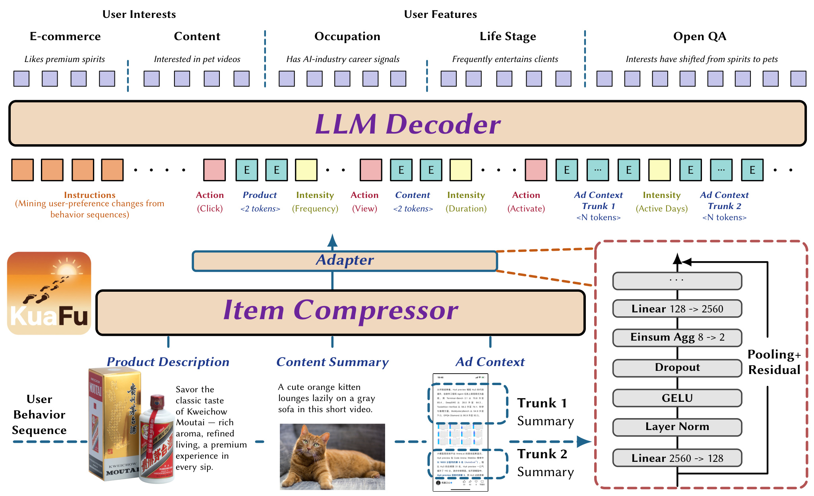
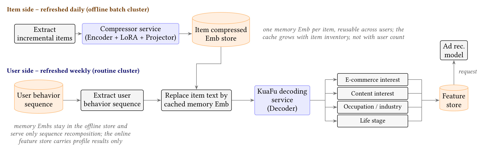
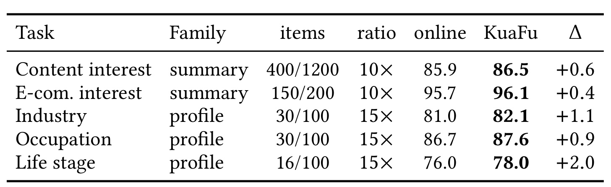
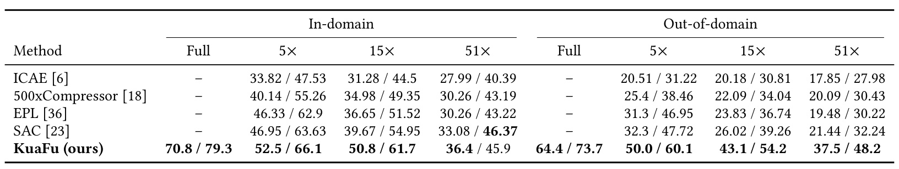
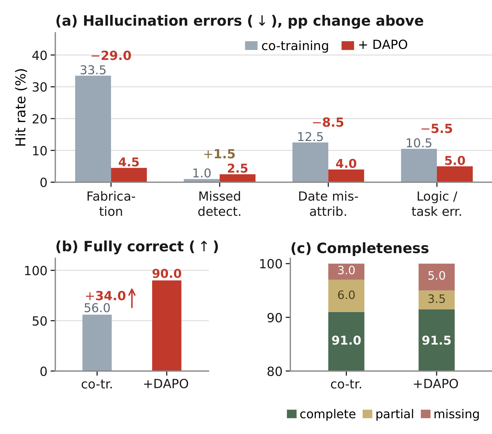
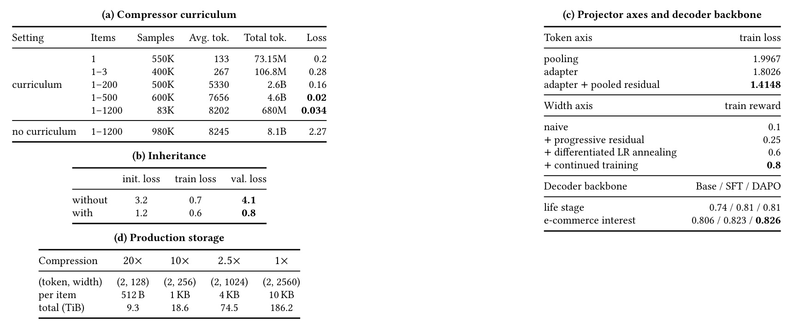

KuaFu：把长用户行为压缩为可复用的理解
KuaFu 研究如何把长行为历史转化成可缓存、可复用、能被大模型理解的物品记忆，在十亿用户画像更新中兼顾成本与事实保真。一作 Jiahao Hui、共同一作兼通讯作者 Lin Zhu 及团队来自腾讯。论文于 2026 年 9 月 25 日公开，论文入口为 KuaFu: Compressing Long User Behavior into Understanding at Billion Scale。本次未核验到本文官方代码或独立项目页。以下以完整主文及附录为依据，区分作者报告的实验事实、可据此推导的工程含义和仍未充分披露的实现细节。
即使先按任务筛选，用户行为序列仍可能有数万文本 token；十亿用户每周刷新画像又对吞吐提出硬约束。压缩因此不可避免，但它会引入虚构、遗漏、时间错配和逻辑错误，而只看下游业务指标无法定位这些中间表示中的失真。
1. 背景和问题
推荐系统使用用户行为时，通常首先关心点击率、转化率或下一物品预测。KuaFu 的直接任务稍有不同：给定一个人的历史行为和任务指令，输出内容兴趣、电商兴趣、职业行业、人生阶段等结构化画像，或者回答关于其兴趣变化的开放问题。这些结果可以再写入推荐特征。用户画像既需要从多次重复行为里抽取稳定信号，也需要保留少见但有解释力的证据，因此它不是简单统计次数，更不是把点击过的商品名称串起来就能完成。论文选择在原始行为和下游理解模型之间增加语义压缩层，研究的是这层表示能否同时承担缓存资产和事实依据两种职责。
作者描述的既有生产方式是按任务拆分：先从全量行为中筛选相关子序列，再分别训练一个理解模型。这种分工便于任务团队独立迭代，也能让无关行为不进入输入，但筛选并没有彻底消除序列长度问题。内容兴趣平均仍需读取数百个物品，长尾达到上千个。商品描述、内容摘要和广告上下文展开成文本后，一个用户就可能对应数万 token。把上下文窗口扩容只解决“装不装得下”的问题，不能同时解决每周都要为大量用户重新计算的吞吐压力。本文因此把上下文容量和例行刷新成本视为同一个系统约束的两个方面。
十亿用户每周画像刷新意味着大约十万级聚合每分钟请求量。这是一个容量规划量级，而不是面向每次在线推荐请求都实时运行大模型。历史越长，单个画像任务越贵；刷新越频繁，固定时间内需要完成的任务越多。在固定 GPU 预算下，直接把原始文本送入大模型，往往只能在历史窗口、覆盖用户数、刷新周期和模型规模之间做妥协。论文想要释放的空间是：相同基础资源下，读取更久远的行为，又更及时地反映新兴趣。最终线上实验确实同时改变了这两个因素，因此业务结果要按完整画像方案理解。
压缩还有另一个容易被忽略的维度：即使每个物品只输出两个软 token，如果每个 token 仍有 2560 维，半精度存储仍约为十 KB。对数百亿去重物品，单条表示多几 KB 就会放大成巨大的缓存开销。减少 token 数主要降低解码器接收的序列长度；减少向量宽度主要降低离线表示的存储体积，两者作用不同。KuaFu 用“双轴”来强调这个区别：只报告输入长度缩短了多少，并不能说明生产缓存已经可承受，更不能直接把长度压缩倍数当成端到端速度提升倍数。
传统上下文压缩可大致分为硬压缩和软压缩。前者删除低重要度词句，输出仍然是自然语言；后者把文本内容编码为有限数量的连续记忆向量。软压缩可以避免只保留原文片段带来的局限，却增加了中间表示的不可读性：模型到底保存了哪条行为证据，很难从向量本身看出。推荐中的语义 ID、多面向物品向量和用户 token 也具有压缩性质，但很多方法主要通过下一物品命中率或排序指标评价。一个表示对预测有帮助，不等于它适合用于生成可核实的画像说明；相关性信号甚至可能鼓励模型补出原始记录里并不存在的事实。
作者把生成端的问题分为四类。虚构是把原文没有的人物、品牌、地点、数字或事件写进回答；遗漏中的漏检是源序列明明存在相关行为，回答却说没有找到；时间错配是给正确事件分配错误日期或凭空命名时间段；逻辑错误包含主客体绑定错误、方向颠倒和明显违背证据的推断。这种划分比笼统的“幻觉率”更有用，因为不同错误的用户损害不同。例如错误断言用户从事某职业，比少列出一种弱兴趣更容易产生严重画像偏差。后续奖励函数因此对虚构施加较高惩罚，但这种取舍也可能提高遗漏，必须在实验中单独展示。
只看 GMV 无法回答表示有没有丢掉关键事实。一次业务实验需要等待结果，业务指标发生变化后还要排查压缩、生成、画像接入和排序模型等多个环节。本文引入的分层中间评估包括简单理解、复杂长序列问答、画像任务、通用阅读理解和开放问答错误分类。它把“压缩之后还知道什么”变成可以离线核对的对象，使迭代不必完全依赖业务试验。这里的直接评估仍然是用任务探测表示，而不是证明表示保留所有信息；不同探测任务遗漏的能力，依然可能在新场景中暴露。
另一个关键选择是独立压缩单个物品，再把其记忆与行为动作、强度和时间顺序组织起来。若每次都把某用户的全历史联合压成一个向量，新行为到来就可能要求重新压缩，而且不同用户看过同一个物品也难以共享表示。以物品为缓存单位可以重复利用热门内容的语义，并让新物品进入系统时只做增量编码。不过，独立编码也意味着压缩器本身看不到用户当前任务和跨物品关系，必须把关系推理交给后面的解码器。因此这项结构选择并非免费午餐，而是在共享计算和条件化理解之间划定边界。
本文最值得关注的是把表示粒度、训练课程、中间评估和生产更新节奏放进同一条链路。 对推荐研究者，它展示了长行为语义理解如何成为排序之前的共享特征生产环节；对大模型研究者，它展示了软压缩如何从阅读理解扩展到结构化用户证据。论文没有主张所有推荐任务都应该改成画像问答，也没有证明压缩后的记忆足以代替完整日志。它验证的是一组具体生产画像任务和若干公开测试下的成本质量取舍，讨论其迁移价值必须保留这个任务边界。
2. 方法
2.1 单物品记忆与双轴投影
原文第 3.1—3.2 节把用户历史写成按时间排列的物品序列，每个物品独立经过带 LoRA 的因果语言模型。对商品可输入商品描述，对内容可输入摘要，超长广告上下文则拆成多个片段。物品后追加专门的记忆 token，其嵌入来自独立表；输入文字仍使用编码器原有词嵌入。跨物品信息不是在压缩器中联合编码，而是在解码器里按序拼接后交互。 这保证了相同物品表示不随用户或问题变化，代价是无法在压缩当时根据当前问题决定保留哪些细节。原文核心公式（1）为：
符号解释：$x_i$ 是第 $i$ 个物品或片段的文本，$E$ 是带 LoRA 的编码器，$m$ 是追加记忆位置数，$d$ 是编码器隐层宽度，$\oplus$ 表示序列拼接，$h_i$ 只取最后一层对应记忆位置的状态。记忆位置通过注意力吸收该物品的信息，但不编码其他物品历史。输入即使有多个物品，也要求独立编码；所谓多物品训练，是让这些独立记忆同时进入解码器，并学习在共同上下文里恢复或理解它们，不能误写成全用户历史经过一个联合编码器。

图一从下到上呈现三个层次。最下面的商品、视频内容和广告上下文提供原始语义，压缩器输出每个对象的记忆，适配器进一步减少表示大小；中间输入带中既有压缩后的内容块，也有点击、浏览、激活等动作，以及频次、停留时长、活跃天数等强度描述；最上方解码器按照任务指令生成不同画像槽位或开放问答。动作与强度不能简单从商品语义推断：同一个商品被看一次和被购买多次意义不同，因此图中明确将这些信号放在内容记忆之外。任务指令也保留普通词嵌入，避免问题自身在压缩时被扭曲。
右下角适配器细节解释了双轴压缩的顺序。先把每个隐藏向量由高维降到低维，再通过可学习聚合把多个记忆位置合成少数位置，然后映射回解码器所需的宽度。图中示例是八个记忆位置聚成两个，宽度从二千五百六十降到一百二十八。这里“八到二”是适配器内部位置数的变化；摘要约十倍 token 压缩是原始文本长度和最终记忆长度相比，两者不能混用。池化残差给训练初期保留较容易传递的信息通道，使窄瓶颈不必一步承担全部重建压力。图中的产品文案与示例问答属于原论文图内例子，不代表对某个真实用户的公开记录。
原文核心公式（2）把投影与残差写为：
符号解释：$\operatorname{Down}$ 把每个 $d$ 维向量压到 $d'$ 维，$C\in\mathbb{R}^{k\times m}$ 在低维空间把 $m$ 个位置融合为 $k$ 个，$\operatorname{Up}$ 恢复解码器输入宽度，$\operatorname{Pool}$ 将原始记忆池化为可相加的残差，$z_i$ 在这个式子里是送入解码器的高维表示。长度压缩比取原始 token 数除以 $k$，宽度压缩比取 $d/d'$。它们描述不同资源，不应直接相乘当作推理加速倍数。论文图二又把低维缓存称为 $z_i$，与公式的输出维度不完全一致；本文将“缓存低维表示”和“解码器高维输入”分开理解。
这个记号问题关联一处真实复现缺口。正文说上线只缓存低维向量，共训练时对残差使用余弦退火，但没有完整给出残差系数终值、部署时池化支路是否完全关闭以及高维恢复的精确执行接口。若公式中的高维残差仍以非零权重依赖原始隐藏状态，就不能仅靠低维缓存完整重建同一输入。因而可以确认作者报告了低维缓存和渐进降维设计，不能据此替作者补写一个已经证明等价的无残差推理算法。解码器使用一维 RoPE，物品顺序由拼接位置承载；这也不是显式建模连续时间间隔的专用时间编码机制。
2.2 四阶段保真训练与幻觉奖励
训练依次继承，冻结范围随阶段变化。第一阶段只更新编码器 LoRA 和记忆嵌入，投影器关闭，解码器冻结，用重建原文建立可读记忆。解码器看到同一序列内多个物品的记忆，并逐项恢复原文本。直接从最长序列开始很难优化，因此按物品数采用一个、一个到三个、一个到两百、一个到五百、一个到一千两百的课程。第二阶段接上投影器，更新压缩侧而冻结解码器，目标变成从压缩输入回答问题。第三阶段解冻解码器，联合适应记忆的写入和读取，避免压缩器永远只能迁就一个固定读取器；残差的渐进退火也是在这一过程中缓解降维瓶颈。
训练集的难度不仅由长度决定。附录描述先用大型指令模型辅助构造问题，再提取词频和名词主体来锁定必须保留的关键证据，形成规范化问答。任务包含指定位置恢复、奇偶位置检索、范围检索、计数、最长连续兴趣、跨来源关联、兴趣分组及时间分析。总共四十二类，拆分为一类重建、八类简单行为理解、七类通用语言任务、二十二类复杂行为理解和四类下游画像任务。重建阶段有二百一十三万样本、八十点六亿 token；简单理解十五万样本、八亿 token，复杂理解三十五万样本、二十三亿 token；共训练也是三十五万样本和二十三亿 token。强化学习阶段五千样本、四千一百万 token。后训练虽拆成简单和复杂两组，仍属于同一个训练阶段，不能因此把“四阶段”误数为五种算法阶段。
最后一阶段冻结编码器和投影器，从离线缓存注入记忆，只更新解码器。对同一个指令采样一组回答，由生成式奖励模型拿未压缩原文逐项核对错误与完整性。核心公式（3）为：
符号解释：$y$ 是候选回答，$\operatorname{comp}$ 把回答判为完整、部分或缺失，$b$ 将完整性映射为奖励，$c$ 枚举四种错误，$w_c$ 是错误权重，指示函数在检测到对应错误时为一。附录给出的权重为虚构零点四五、时间错配零点二四、逻辑或任务错误零点二四、漏检零点零七，体现损害优先级；完整性奖励的具体数值映射没有披露。不同错误可同时命中，同一答案的惩罚不必只来自一类，因此各错误命中率不是一个相加为百分之百的类别分布。
组内答案共享问题，通过组内奖励形成优势，策略更新使用 DAPO：token 级重要性比率、非对称裁剪、不加 KL 项，并排除截断答案。论文没有写出完整 DAPO 损失公式，因此这里保留三个原文核心公式，而不把引用方法的细节伪装成本篇已经给出的推导。完整性项希望防止模型靠少说话逃避惩罚，但不保证每类遗漏都下降；最终实验必须同时看虚构率、完全正确率和缺失回答比例。训练奖励模型与测试裁判不同，后者更强，这减少了对单个裁判的直接适配，却不能排除共同偏差。尤其涉及隐含职业或人生阶段时，允许轻微推断和禁止无证据臆测之间仍需明确标注规范。
2.3 缓存与用户画像服务

图五把推理链路拆成物品侧和用户侧两种周期。上半部分每天抽取增量物品，由编码器、LoRA 与投影器所在的压缩服务生成表示，写入物品记忆库。物品的表示只依赖物品自身，因此热门内容被许多用户消费时，语义编码成本可以重复摊销。下半部分每周抽取用户历史，把其中的物品文本替换成缓存记忆，按行为顺序重组后送入 KuaFu 解码器，输出四类画像结果。这里需要严格区分两个存储位置：物品记忆留在离线表示库，在线特征库承载的是画像结果。图右侧广告推荐模型请求的是这些结果，并不是每次线上请求都读长串软 token、调用一次画像大模型。
两种服务分别部署在独立集群，原因是负载形态不同。物品侧是可增量、可去重的批计算，用户侧是按大量用户周期执行的长序列理解。即使新物品数量相对较少，周更画像仍需要重新组合用户历史并运行解码器；不能把物品可缓存等同于用户画像无需重算。反过来，若用户兴趣变化但物品描述没变，也不需要为了同一个商品反复运行语义编码器。图中的共享缓存节约了跨用户重复工作，长序列解码仍由用户侧承担，这明确了论文吞吐提升的来源和剩余成本。
该设计还允许画像任务共享表示：内容兴趣、电商兴趣、职业行业及人生阶段读取相同类型的物品记忆，任务差异由指令或下游任务头体现。但“共享”是结构上的能力，不能理解为所有任务都拥有相同压缩率、相同输出口径或相同最优参数。兴趣摘要使用较长行为序列和十倍压缩，画像任务采用相对短的序列和十五倍压缩。落地时还需管理物品内容变化、表示版本与解码器版本的一致性；论文没有报告这些缓存失效策略的量化成本，因此这里只把它们视为从系统结构推导出的复现检查点。图上持续复用的假设成立于物品内容和编码模型版本可被正确追踪的条件下。
3. 实验结果
3.1 生产画像与外部压缩器

表二比较线上未压缩单任务模型与使用压缩输入的多任务 KuaFu。内容兴趣 F1 从八十五点九升到八十六点五，电商兴趣 F1 从九十五点七升到九十六点一；行业准确率从八十一点零到八十二点一，职业准确率从八十六点七到八十七点六，人生阶段准确率从七十六点零到七十八点零。对应变化分别为零点六、零点四、一点一、零点九和二点零个百分点。虽然表里有五行，它们属于四种画像任务，职业和行业在同一类任务中分开计分。不同任务的 F1 与准确率不能求一个没有明确权重意义的平均值，更不能把两点准确率增长写成两成效果提升。
表中内容兴趣物品数量标为四百／一千两百，电商一百五十／两百，行业职业三十／一百，人生阶段十六／一百，与主文描述的典型和长尾序列规模一致。前两类使用十倍压缩，后三行使用十五倍压缩。它展示了较长内容行为与较短属性判断都能工作，但没有提供每个长度桶的详细误差曲线，因此不能据此宣称所有极长尾用户都获得同等收益。表二的基线是实际生产画像方案，含监督微调与偏好优化；两边除了压缩与否，还存在单任务与多任务训练组织差异，所以它回答的是完整方案是否保持画像质量，而不是单独隔离某一投影算子的净贡献。
这组结果的重要性在于压缩没有要求牺牲所有下游指标来换取成本下降。作者认为压缩会弱化重复和噪声，使稳定偏好更突出，但这是对观测结果的解释，表二本身不能证明哪些行为被“去噪”了。要直接验证该因果解释，需要按重复度、证据稀疏度和兴趣变化程度分桶，检查哪些信息被保留、哪些被丢弃。生产数据不可公开，也没有在此表提供样本量、方差或置信区间，因此较小的零点四、零点六个百分点变化应按作者报告的离线结果引用，不应自行给出显著性结论。最稳健的阅读是：在该评测协议里，五项核心结果均未下降，而系统吞吐另有独立证据。
与外部压缩器的对比见原文表三。为对齐规模，双方换成 Llama-3.2-1B，软压缩都设十五倍，共用行为样本、切分、任务监督、输入重组及 LoRA 参数化，目标语言模型冻结，各基线按各自训练流程收敛。KuaFu 四任务综合分六十三点零，EPL 四十二点四，其他软方法更低。逐任务最强基线的差距分别为电商十六点零、职业八点二、内容三十点零和人生阶段二十六点六。这里的分数来自 LLM 裁判，不等同于表二的生产准确率。LLMLingua-2 是五倍、免训练的硬压缩外部参考，不能和十五倍重训练软压缩直接做公平优劣结论。对齐条件增强结构有效性的证据，但不同方法原始训练目标仍不同，“差距全部由一个算子造成”是比数据支持范围更强的说法。
3.2 MRQA 与推荐迁移

表六将通用压缩问题独立出来：使用一 B 骨干，在六个域内和六个域外阅读理解子集上报告 EM 与 ROUGE-1 F1。KuaFu 按 SAC 的训练数据及配方重新训练，其他数值取自 SAC 论文，因此这与表三全部重新训练的工业实验不是同一种对齐方式。域外直接用同一个检查点，不做域适配。域内五倍、十五倍、五十一倍压缩的 EM 分别为五十二点五、五十点八、三十六点四；域外分别为五十点零、四十三点一、三十七点五。随压缩加剧质量总体下降，KuaFu 优于其他压缩器不等于它没有相对完整上下文的信息损失。
最有用的比较有三组。第一，十五倍压缩的域内五十点八仍高于 SAC 五倍的四十六点九五，说明在这个协议下能以更小输入保有更高精确匹配。第二，五十一倍压缩的域外三十七点五仍高于各基线五倍时的结果，显示域外保真优势并未随激进压缩完全消失。第三，摘要说的“最多提升十七点七”来自域外五倍五十点零减 SAC 三十二点三；主文图三的“加十七点一”来自域外十五倍四十三点一减二十六点零二，四舍五入为十七点一。二者对应不同压缩率，并非互相矛盾的结果。 报告该数字必须附上 EM、域外和压缩率，不能抽离成所有任务的统一涨幅。
边界也直接写在表里。完整输入时 KuaFu 域内 EM 七十点八、域外六十四点四，明显高于其压缩后的对应成绩，所以“超过已有压缩方法”和“匹敌完整上下文”不能混为一谈。唯一未领先的报告单元是域内五十一倍的 ROUGE-1 F1：KuaFu 四十五点九，低于 SAC 四十六点三七。EM 衡量答案完全匹配，ROUGE 更关注词面重合，两者不必同向。表中其他方法的完整输入列是横线，作者解释其为压缩方法在该协议下没有无压缩定义，不应读成这些基线在完整输入条件下失败或得零分。公开数据增强了可比较性，但未见重复运行置信区间；对小差异仍需谨慎。
推荐迁移采用 RecBench 零样本两两 CTR 比较，覆盖 MIND、MicroLens、Goodreads、CDs 和 H&M。KuaFu-ZS 的未舍入均值为零点六一六六，图上标零点六一七；对比同族 Qwen3-4B 的零点五七零，作者报告提升四点七零个百分点；相对八 B 同族零点五九八，提升一点九零个百分点。差值使用未舍入值，不能只用图上三位小数反算后指称论文算错。该实验没有推荐专项训练，压缩的是用户行为输入，证明已有行为记忆可迁移到该协议，而不是证明全新的推荐训练模型全面超越传统推荐系统。
附录图六还给出两个不应忽略的限制。Mistral-7B 的零点六一九九和 GLM-4-9B 的零点六二三一均略高于 KuaFu，因此不是整个榜单第一。CDs 子集从同骨干零点五一零降到零点四八九，均值优势掩盖了负向任务。在稀疏或偏好信号不同的场景，固定长度记忆可能损失关键证据。跨数据集均值便于展示，但不能替代部署目标域的分桶验证；尤其论文没有推荐专项训练，这个负向子集正好提醒我们，工业画像数据形成的记忆归纳偏置并不自动适合每一种推荐分布。
3.3 幻觉控制的收益与代价

图四使用一千条长序列开放问答样本、五类指令，对比共训练检查点和加入幻觉感知 DAPO 后的解码器。测试由比训练奖励模型更强、且不同的 LLM 裁判完成，并用未压缩原文作为依据。虚构命中率从百分之三十三点五降到四点五，减少二十九个百分点；日期错配从十二点五降到四，逻辑或任务错误从十点五降到五。完全正确率从五十六升到九十，提升三十四个百分点。这组结果直接支持针对不同损害设计奖励可以改变生成行为，而不是只能依赖重建损失间接希望模型少出错。
然而图左侧也清楚显示漏检从百分之一升到二点五。右下角完整性分布中，完整回答从九十一到九十一点五，部分回答从六到三点五，缺失回答却从三到五。完整回答略有增加不意味着所有回答都更完整，因为中间的“部分”同时向两侧移动。正文必须同时保留这些指标，不能概括为四种幻觉全面下降，也不能用完全正确率增加来遮盖缺失率反弹。漏检与缺失回答不是同一个概念：前者是错误断言没有某种证据，后者是指令要求未被回答；一个回答可能在覆盖范围上缺失，也可能在回答后给出错误否定。
这一取舍与奖励权重吻合。虚构惩罚最重，漏检最轻，策略更倾向于谨慎表达。完整性奖励抑制大规模回避作答，但仍保留了遗漏上升的空间。作者把这种结果视为可接受的损害排序，本笔记将其视为具体任务下的决策而非通用最优原则。若下游任务是找出所有潜在风险事件，遗漏代价可能高于多列一个待核查线索，同样权重就未必适用。评估者应先明确错误成本，再决定哪种曲线变化是进步，不能只把一个综合奖励升高当作事实质量全面提高。
此外，独立测试裁判降低了训练测试完全同源的问题，但仍是模型评分，不等于由多名人工标注者盲审得到的可靠性上界。图中错误类别可重叠，所以不能将四根错误柱子相加算总错误率，再与完全正确率机械互补。论文没有给出这千条问答的人工一致性、细分指令分布和误差条，因此百分之九十应限定为该裁判协议下的完全正确率。工业用户画像会影响后续个性化，部署复现时最应检查的不是能否复现一条漂亮总分，而是困难长尾问题中的错误类型分布是否与自己的损害排序一致。
3.4 消融与部署收益

表七将架构、优化和资源量级连接起来。左上课程实验中，直接混合一到一千两百物品训练，消耗约八十一亿 token 后损失停在二点二七；课程方案总量约八十点六亿，最后最长桶损失零点零三四。作者强调总 token 相近，支持训练难度组织具有关键作用。五个课程桶的损失来自不同阶段和长度分布，不能简单取最小的零点零二，与所有长度混训构成完全同分布对比。最稳妥的结论是：这套训练设置直接上长序列不收敛，分阶段继承显著改善了训练；这不构成所有可能优化器都必须采用相同五桶的数学必要性证明。
继承实验进一步说明只看训练损失会误导。没有预训练继承时，训练损失已经零点七，验证却为四点一；继承后训练零点六、验证零点八。这表明重建阶段建立的可读记忆对泛化有价值，而不是最后监督任务把训练集拟合好就足够。右侧 token 轴从单纯池化的一点九九六七，改成适配器一点八零二六，再加池化残差到一点四一四八；宽度轴从朴素方案奖励零点一，渐进残差零点二五，再加入差异化学习率退火零点六和继续训练零点八。这是逐项累积的优化配方，不能视作每个模块贡献在任意顺序下都可相加。
底部存储展示了宽度压缩的独立价值。二百亿去重物品、每物品两个半精度向量时，宽度二千五百六十对应约十 KB、总量一百八十六点二 TiB；宽度一千零二十四对应四 KB、七十四点五 TiB；宽度二百五十六对应一 KB、十八点六 TiB；宽度一百二十八对应五百一十二字节、九点三 TiB。这些是向量载荷量级，并非包含键、索引、复制、版本历史和容灾的完整数据库账单。它解释了为什么“两个 token”仍不足以定义可用缓存，也解释了为什么残差退出和低维部署接口需要复现者进一步确认。
作者报告三个任务的每 GPU 每分钟请求量：人生阶段五百九十二到八百一十，约增百分之三十七，对应 GPU 四十一到三十；电商兴趣二百五十到八百，增百分之二百二十，GPU 九十到二十八；内容兴趣四十到一百八十，增百分之三百五十，GPU 一百五十到三十三。节省量分别十一、六十二、一百一十七，合计一百九十张。这些吞吐提升小于长度宽度压缩倍数的乘积是正常的，因为生成、输入重组、查缓存和调度并没有全部按两个轴同比缩减。不同任务有不同输入输出规模，也不能把最大三百五十个百分点的相对吞吐增幅套到所有画像任务。
线上实验按独立访客随机分流，在画像挖掘端固定资源。对照采用一年历史、每月刷新；实验采用两年历史、每周刷新。推荐模型、训练样本及其他特征一致，四周内流量按百分之一、五、二十、八十逐步全量，此后保留百分之五 holdout 再观察十个月，报告总 GMV 相对提升百分之一点三七，百分之九十五置信区间为零点七一到二点零三。这是本文最强的业务落地证据，也必须准确说明归因：差异来自整套新画像，而新画像同时受益于压缩、更长历史和更高刷新频率。它没有单独给出压缩算子、历史窗口、刷新周期三项正交消融，因此不能声称只把原输入换成软 token 就会得到同样 GMV 收益。
4. 总结
KuaFu 的核心贡献可以归纳为一个具体设计判断：当同一物品被大量用户反复消费，画像又要例行刷新时，先把物品语义压成共享记忆，比每次为每个用户重新阅读所有原文更符合成本结构。双轴压缩同时处理解码长度和表示存储，训练课程让模型学会在多物品共存时恢复和理解信息，幻觉感知奖励则把事实错误从事后业务问题变成直接优化对象。三者相互依赖：只有压缩而没有可读性训练，记忆可能不可用；只有重建而没有任务理解，重要证据未必被正确整合；只有综合业务指标而没有错误分类，优化方向又难以定位。
实证链条比单一榜单更完整。生产五项核心画像指标均未下降，公共阅读理解展示不同压缩率下的精确匹配优势，推荐零样本迁移说明记忆不只适用于训练时的画像输出，独立裁判下的幻觉分解说明奖励改变了具体错误类型，吞吐与存储则连接到十亿用户周更约束。与此同时，完整输入在 MRQA 上仍明显优于压缩输入，CDs 推荐子集退化，漏检和缺失回答增多，说明表示瓶颈并未消失。把这些负向证据一起保留下来，才知道后续应在何处增加任务自适应容量或调整奖励。
我认为最可迁移的是实验组织方式：先独立核验画像保真与各类错误，再看成本，最后通过完整线上画像方案评价业务价值。对长行为推荐项目，可以借鉴物品级缓存和跨任务复用，但必须先判断自己的物品是否具有可共享的稳定语义。如果输入主要是用户特有上下文、交互数值或快速变化的事件描述，按物品共享可能远不如本文划算。独立压缩也会损失条件化能力，对少量关键证据依赖很强的任务，应检查每个物品的固定记忆长度是否够用，而不是照搬统一压缩率。
公开复现还存在几项具体缺口。训练语料来自专有日志，无法独立验证其覆盖和清洗；学习率只给出大致范围、完整性奖励未给出具体映射，缓存与残差在推理端如何严格衔接也未完全展开。论文报告的模型与公开基线存在多种协议，生产 Qwen3-4B、外部压缩器对齐的 Llama-3.2-1B、公开 MRQA 引用结果以及零样本推荐不能拼成一张跨口径总榜。没有官方代码入口也意味着应把架构可理解与工程可精确复现分开。上述缺口并不否定结果，但限制了可以从论文直接复制到其他系统的程度。
隐私方面，作者说明日志去标识化、物品记忆按物品而非用户索引且不公开个人级数据；这些是其处理声明。压缩不是隐私证明，向量也不天然不可逆。 用户侧仍然组合行为历史并输出敏感程度可能较高的属性推断，因此应用场景需要与自身的数据授权和访问控制匹配。未来工作中的按问题压缩、时间轴压缩及持续记忆值得关注，不过它们也可能改变当前跨用户共享缓存成立的条件。评估任何扩展时，应该同时报告命中证据、遗漏证据、缓存失效成本和端到端刷新周期，避免只优化一个漂亮的压缩比例。
最终阅读判断是：这是一篇把大模型语义理解接入大规模画像生产的系统论文，价值在于共享表示与更新资源之间的清晰联系。其业务增益具有作者长期留出组证据，但属于历史长度、刷新频率与压缩方案共同支持的结果；其幻觉优化具有明显收益，也具有明确代价。后续最有价值的验证，是在自己的目标行为分布上重做中间评估，并要求低维缓存推理与训练残差路径给出可测试的一致性契约，而不是仅复用摘要里的最大提升数字。